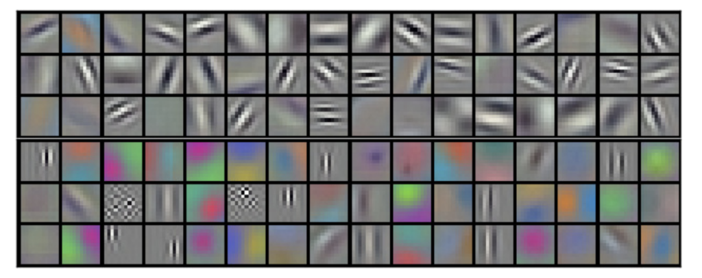
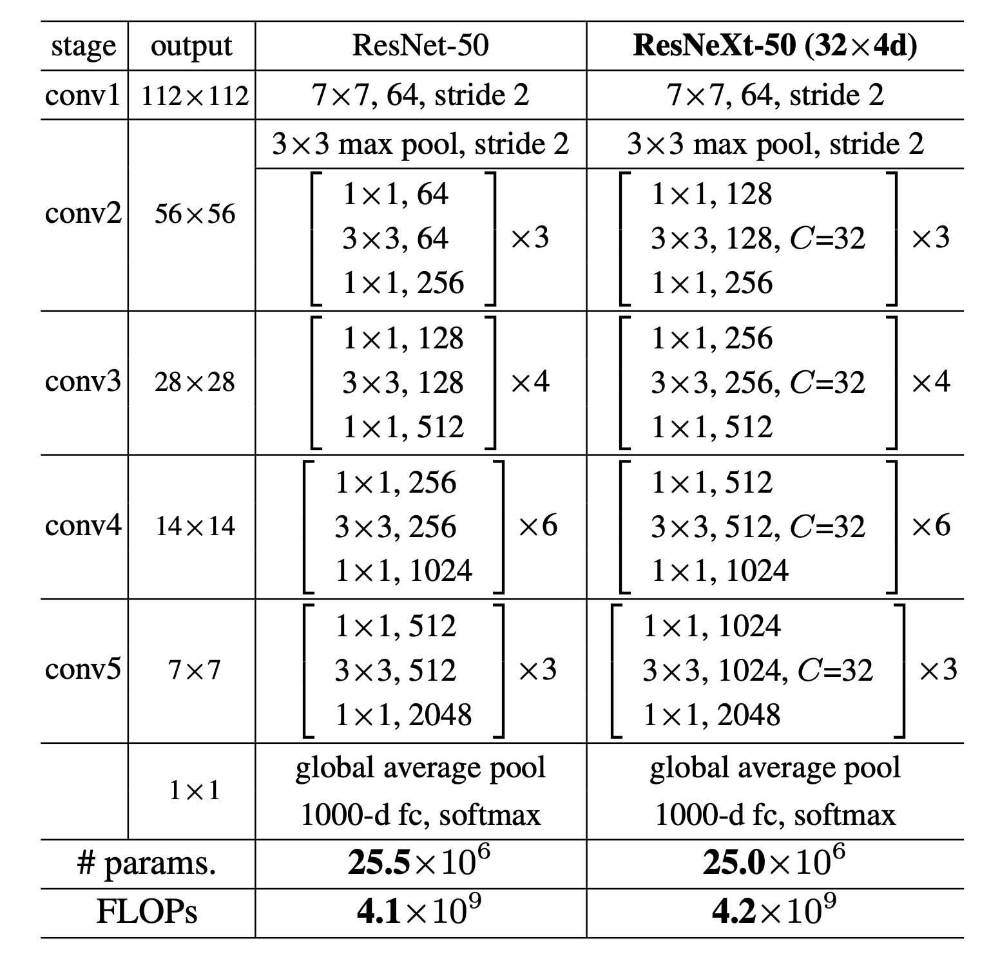
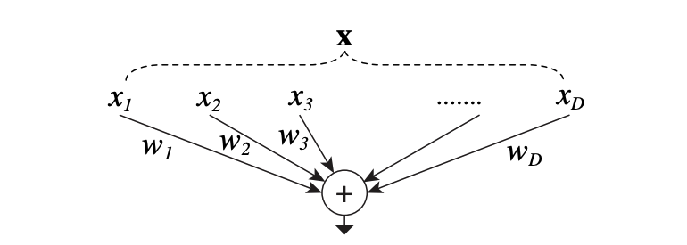
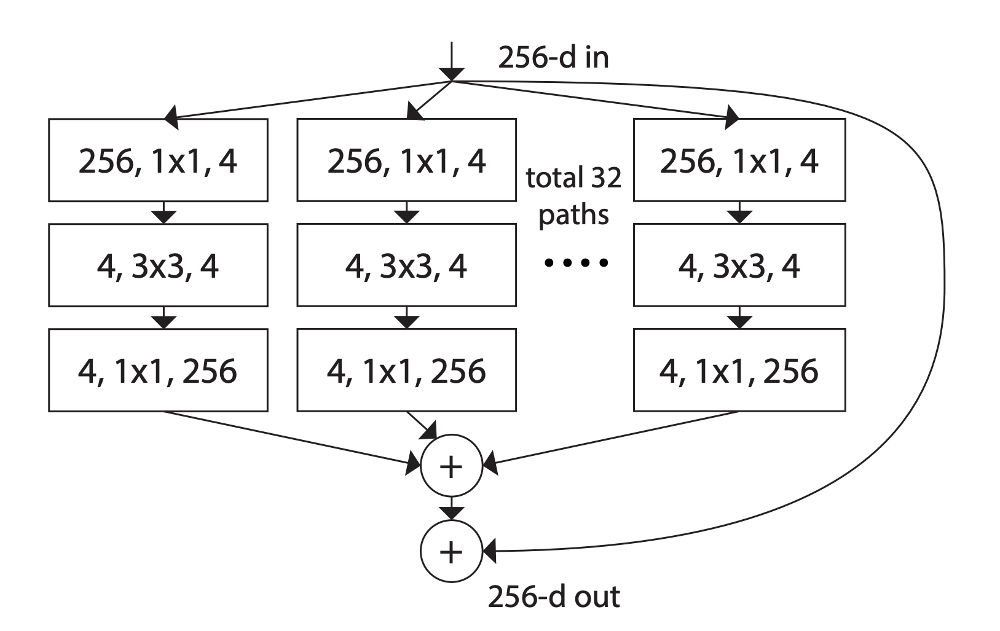

ResNeXt (1) - 2016
- 넓고(Wide, large width), 깊은(depth) 모델이 다가 아니다!😎
- Next dimension,
Cardinality를 제시하는 ResNeXt Review!
🎁 종합선물세트 같은 ResNext
- 제가 리뷰해 온 논문들을 읽어 오셨다면, 여태껏 읽었던 AlexNet, VGG, ResNet, 그리고 Inception 친구들의 모든 개념이 이 ResNeXt의 개념에서 다 모여서 합쳐지는 것을 목도하실 수 있습니다.
미안하다.. 이거 보여주려고 어그로 끌었다..느낌😄 - 그만큼 개인적으로 재밌게 읽었던 논문인데요, 그럼 각설하고 설명에 들어가겠습니다! 논문에서 설명하는
Cardinality의 개념을 빨리 이해하기 위해 미리 ResNeXt Block을 살펴보도록 하겠습니다.

- 오른쪽 그림이 ResNeXt block입니다! 친숙한듯 하면서, 조금 다른 느낌이죠? ResNet의 모양도 있고, 뭔가 복잡한 것이 Inception Block도 닮았습니다.
- 오른쪽의 ResNeXt Block과 왼쪽에 보이는 ResNet Block의 계산량은 거의 똑같습니다! 간단하게는 ResNet의 가운데
64, 3x3, 64Block을32개의 4, 3x3, 4블록으로 나누었다고 생각하시면 됩니다. :) 여기서, 한 ResNeXt 블록이 ‘얼마나 많은 그룹으로 구성되어있느냐’하는 개념을 Cardinality라고 칭합니다. 즉, 이 블록의 Cardinality는 32입니다.
1. Introduction 👋
VGG + ResNet + Inception
- 위에서 보셨듯, ResNeXt는 VGG/ResNet에서 볼 수 있었던 기법 - 같은 레이어를 반복해서 겹쳐 사용하는(
Strategy of repeating layers) - 과 Inception Block에서 볼 수 있었던 기법 - 나누고, 변형하고, 다시 합치는(split-transform-merge) - 을 합쳐서 사용하는 모델입니다. - Inception은 아주 정교하게 잘 짜여진 모델이지만, 어떻게 Inception 구조를 새로운 Dataset에 적용해야할지 알기가 힘듭니다. 그것이 아니더라도 우리는 조정해야할 너무 많은 Hyperparameter(epoch, lr, batch size, scheduler..)가 있기 때문이죠. 그래서, Inception의 방식은 취하되 좀 더 확장하기 편하고 구현하기 편한 방향으로 ResNeXt는 블록을 구성합니다.
Grouped Convolution
- 그리고 알고봤더니, AlexNet에서 엉겁결(?)에 이미 구현했던 개념인 Grouped Convolution의 개념도 ResNeXt에서 살펴 볼 수 있습니다. AlexNet 당시에는 하드웨어의 한계로 인해 두 개의 GPU에 Filter를 따로 나눠서 학습했던 것 뿐인데, 아래 그림 처럼 서로 다른 특징(흑백, 컬러)를 잡아서 학습했었더랬죠.

- 이 개념에 착안하여 필터들을 각자 Grouped Conv의 형태인 ResNeXt 블록으로 학습을 하였더니, 계산량을 유지하면서 모델의 표현력을 올려주는 파워를 확인할 수 있었다고 합니다.
Cardinality
- 한국어로는 ‘농도’정도로 번역이 되는 것 같은데, Filter가 ‘얼마나 짙은 농도의 group으로 구성되어 있는지’라고 생각해봐도 꽤 잘 어울리는 표현이네요.
- 모델의 이름도 ResNeXt인 이유도, 그 동안 모델의 깊이(depth)와 너비(wideness, width)라는 크게 두 가지 개념으로 모델의 구조를 설계해왔던 것에 더해 ‘그 다음(Next) 개념’으로 Cardinality를 제안하기 때문이라고 합니다. 😎
- 실험적으로 이 Cardinality를 높이는 것이 모델의 깊이나 너비를 늘리는 것보다 정확도를 올리는 것에 더 효과적이며, 특별히 기존 모델에서 깊이나 넓이가 주는 효과가 떨어질 때 더 빛을 발했다고 합니다.
2. Related Work 📚
Multi-branch convolutional networks.
- Multi-branch arichitecture의 대표적인 모델이 바로 Inception입니다. 브랜치 하나하나가 아주 섬세하게 customized된 경우죠. 사실 ResNet도 identity mapping을 하나의 브랜치로 하면 two-branch network이고, 많은 모델들이 그렇습니다.
Grouped convolutions
- 논문에서는 이 부분에서 AlexNet을 다시 언급을 하면서, Groupted convolution에 대해 또 설명을 하는데요, 저는 위에서 다뤘기 때문에 넘어가겠습니다. 😄
Compressing convolutional networks
- CNN의 불필요한 용량을 걷어내고 경량화를 위한 논문들을 언급하면서, 여기서 주로 grouped convolution을 성능 손실은 최대한 줄이면서 용량은 감축하는 방편으로 쓰는 것을 언급합니다.
- 그러나 ResNeXt는 반대로, 같은 성능을 내면서 용량을 얼마나 더 줄일 수 있는지에 grouped conv를 사용하는 모델 Compression을 위해서가 아니라, ‘그 계산량이면 정확도를 더 올릴 수 있겠는데?!’라는 방식으로, 모델의 더 강력한 표현력(=정확도)을 위해 사용했다고 말합니다.
Ensembling
- Ensemble 기법은 확실히 성능을 올리는 효과적인 방법입니다. 어떻게 보면 뭔가 ResNeXt의 동작방식도 앙상블스러워 보이지만, 사실 각각의 멤버들이 독립적으로 학습되는 것이 아니라, 함께 학습이 되기 때문에 앙상블로 여기는 것은 부정확하다고 짚고 넘어갑니다.
3. Method 🔍
3.1. Template
ResNeXt는 VGG/ResNets 방식의 Stack of residual blocks로 구성되어 있습니다. 특별히, 아래와 같은 두 가지 규칙에 의거해서 정했다고 하네요.
- 만약 같은 사이즈의 feature map을 output으로 내놓는다면, 그 블록들은 같은 width, 같은 filter size로 구성되어야 한다.
- Feature map size가 절반으로 줄어드는 상황에서는, filter size는 2배가 된다.
이 규칙대로 만들어진 ResNeXt-50은 아래와 같은 구조입니다. ResNet-50과 비교해 볼 수 있습니다.

- 이 규칙을 적용한 결과, 실제로 거의 비슷한 FLOPs(floating-point operations, in # of multiply-adds) 수치를 가질 수 있게 됩니다.
3.2 Revisiting Simple Neurons
가장 단순한 Neural Net의 형태는 아래와 같은 inner product(weighted sum)의 형태 입니다.
$$\displaystyle\sum^D_{i=1}w_ix_i$$이를 Convolution layer의 형태로 이해한다면, $x=[x_1, x_2,…,x_D]$는 $D$-channel input vector이고, $w_i$는 $i$ 번째 channel의 weight 값으로 볼 수 있습니다. 아래와 같이 말이죠.

즉, 이 계산은 splitting, transforming, and aggregating 으로 이루어진, 총 3가지 모양으로 이해할 수 있습니다.
Splitting: vector $x$는 더 작은 차원으로 나눠(embedding)집니다. 위의 예시에서는 single-dimension subspace $x_i$로 나눠집니다.Transforming: 이 더 작은 차원으로 나눠져서 표현된 친구들이 transform을 하게 되는데 위의 예시에서는 단순히 $w_i$로 scale되는 것으로 보실 수 있습니다.Aggregating: transform된 녀석들은 이제 다 $\sum^D_{i=1}$로 합쳐집니다.
3.3. Aggregated Transformations
이제 위에서 든 예시를 통해 알게 된, elementary transformation ($w_ix_i$)에 해당하는 것을 좀 더 고차원적인 함수인 Network 자체로 치환하는 것을 생각해 볼 수 있습니다.
Network-in-Network가 모델의 Depth를 늘렸던 것과는 상반되게, ResNeXt는 새롭게 제시하는 Cardinality를 늘리는 방식의 “Network-in-Neuron“💡을 선보입니다. 수식으로 설명을 하자면, 아래와 같은 모양입니다.
$$\displaystyle\sum^C_{i=1}T_i(\text{x})$$임의의 함수 $T_i(\text{x})$를 통해서 $\text{x}$는 다른 차원으로 embedding되고 transform을 거치게 됩니다. 위의 식에서 $C$는 cardinality를 의미합니다. 단순한 Neuron Inner product의 예시에 나왔던 $D$와 같은 위치에 있긴 하지만, 같은 숫자일 필요가 없습니다.
$D$는 단순히 dimention of width - 얼마나 많이 transformation을 수행하는지만 표현하는 수치라면, $C$는 dimention of cardinality 로써, 취하게 되는 transformation의 복잡한 정도를 수치로 표현하는 것이기 때문에 그렇습니다. (이 부분이 조금 추상적일 수 있습니다. ResNeXt 2편에서 좀 더 자세히 다루도록 하겠습니다.)
이것을 ResNet의 residual function의 형태로 생각하면, 수식은 아래와 같아 집니다. 이 수식을 보고 난 뒤에, 포스팅 처음에 나왔던 ResNeXt Block을 다시 보시면 좀 더 친숙하실 것도 같네요. ☺
$$y= x +\displaystyle\sum^C_{i=1}T_i(\text{x})$$

여기까지, ResNeXt 리뷰 1편을 마치도록 하겠습니다. ResNeXt 2편에서는, 더 구체적으로 왜 ResNeXt는 더 좋은 성능을 내면서 같은 계산량을 유지할 수 있는지, 그리고 모델의 실험 결과에 대해 알아보면서 마무리하도록 하겠습니다. 😉
읽어 주셔서 감사합니다! 🙇
References
- ResNeXt paper